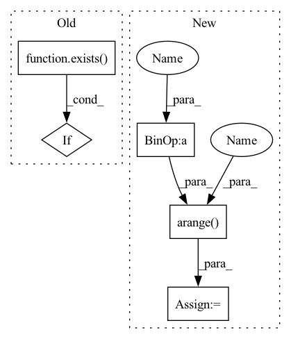

Pattern ID :31302
Before Change
mask = rearrange(mask, "b j -> b 1 1 j")
weight = weight.masked_fill(~mask, mask_value)
if exists( causal_mask) :
weight = weight.masked_fill(causal_mask, mask_value)
exp_weight = weight.exp()After Change
if causal and q_start_index < (k_start_index + k_chunk_size - 1):
q_range = torch.arange(q_start_index, q_start_index + q_chunk_size, device = device)
k_range = torch.arange(k_start_index , k_start_index + k_chunk_size, device = device)
causal_mask = rearrange(q_range, "i -> i 1") < rearrange(k_range, "j -> 1 j")
weight = weight.masked_fill(causal_mask, mask_value)
exp_weight = weight.exp()In pattern: SUPERPATTERN
Frequency: 3
Non-data size: 5
Instances Fragment ID: 91872955
Project Name: lucidrains/memory-efficient-attention-pytorch
Commit Name: 4be82443e060be7224be5e8247c097fcc84aa72d
Time: 2022-03-20
Author: lucidrains@gmail.com
File Name: memory_efficient_attention_pytorch/memory_efficient_cosine_sim_attention.py
M Class Name: AnonimousClass
N Class Name: AnonimousClass
M Method Name: summarize_qkv_chunk(7)
N Method Name: summarize_qkv_chunk(6)
M Parent Class:
N Parent Class:
M File Name: memory_efficient_attention_pytorch/memory_efficient_cosine_sim_attention.py
N File Name: memory_efficient_attention_pytorch/memory_efficient_cosine_sim_attention.py
M Start Line: 53
M End Line: 68
N Start Line: 53
N End Line: 73
Before Change
mask = rearrange(mask, "b j -> b 1 1 j")
weight = weight.masked_fill(~mask, mask_value)
if exists( causal_mask) :
weight = weight.masked_fill(causal_mask, mask_value)
exp_weight = weight.exp()After Change
if causal and q_start_index < (k_start_index + k_chunk_size - 1):
q_range = torch.arange(q_start_index, q_start_index + q_chunk_size, device = device)
k_range = torch.arange( k_start_index, k_start_index + k_chunk_size, device = device)
causal_mask = rearrange(q_range, "i -> i 1") < rearrange(k_range, "j -> 1 j")
weight = weight.masked_fill(causal_mask, mask_value)
exp_weight = weight.exp() Fragment ID: 91872954
Project Name: lucidrains/memory-efficient-attention-pytorch
Commit Name: 4be82443e060be7224be5e8247c097fcc84aa72d
Time: 2022-03-20
Author: lucidrains@gmail.com
File Name: memory_efficient_attention_pytorch/memory_efficient_cosine_sim_attention.py
M Class Name: AnonimousClass
N Class Name: AnonimousClass
M Method Name: summarize_qkv_chunk(7)
N Method Name: summarize_qkv_chunk(6)
M Parent Class:
N Parent Class:
M File Name: memory_efficient_attention_pytorch/memory_efficient_cosine_sim_attention.py
N File Name: memory_efficient_attention_pytorch/memory_efficient_cosine_sim_attention.py
M Start Line: 53
M End Line: 68
N Start Line: 53
N End Line: 73
Before Change
def forward(self, *dimensions):
device = self.device
if not exists( self.rel_pos) or not self.cache_rel_pos:
positions = [torch.arange(d, device = device) for d in dimensions]
grid = torch.stack(torch.meshgrid(*positions, indexing = "ij"))
grid = rearrange(grid, "c ... -> (...) c")After Change
// get all relative positions across all dimensions
rel_positions = [torch.arange(-d + 1, d, device = device) for d in dimensions]
rel_pos_grid = torch.stack(torch.meshgrid(*rel_positions, indexing = "ij"), dim = -1)
rel_pos_grid = rearrange(rel_pos_grid, "... c -> (...) c")
Fragment ID: 91872958
Project Name: lucidrains/make-a-video-pytorch
Commit Name: b6e0a17c5488b923d884272f7e46170352b0f0d5
Time: 2023-03-18
Author: lucidrains@gmail.com
File Name: make_a_video_pytorch/make_a_video.py
M Class Name: ContinuousPositionBias
N Class Name: ContinuousPositionBias
M Method Name: forward(1)
N Method Name: forward(1)
M Parent Class: nn.Module
N Parent Class: nn.Module
M File Name: make_a_video_pytorch/make_a_video.py
N File Name: make_a_video_pytorch/make_a_video.py
M Start Line: 110
M End Line: 126
N Start Line: 105
N End Line: 142
Before Change
mask = rearrange(mask, "b j -> b 1 1 j")
weight = weight.masked_fill(~mask, mask_value)
if exists( causal_mask) :
weight = weight.masked_fill(causal_mask, mask_value)
weight_max = weight.amax(dim = -1, keepdim = True).detach()After Change
if causal and q_start_index < (k_start_index + k_chunk_size - 1):
q_range = torch.arange(q_start_index, q_start_index + q_chunk_size, device = device)
k_range = torch.arange( k_start_index, k_start_index + k_chunk_size, device = device)
causal_mask = rearrange(q_range, "i -> i 1") < rearrange(k_range, "j -> 1 j")
weight = weight.masked_fill(causal_mask, mask_value)
weight_max = weight.amax(dim = -1, keepdim = True).detach() Fragment ID: 91872961
Project Name: lucidrains/memory-efficient-attention-pytorch
Commit Name: 4be82443e060be7224be5e8247c097fcc84aa72d
Time: 2022-03-20
Author: lucidrains@gmail.com
File Name: memory_efficient_attention_pytorch/memory_efficient_attention.py
M Class Name: AnonimousClass
N Class Name: AnonimousClass
M Method Name: summarize_qkv_chunk(7)
N Method Name: summarize_qkv_chunk(6)
M Parent Class:
N Parent Class:
M File Name: memory_efficient_attention_pytorch/memory_efficient_attention.py
N File Name: memory_efficient_attention_pytorch/memory_efficient_attention.py
M Start Line: 52
M End Line: 67
N Start Line: 52
N End Line: 72